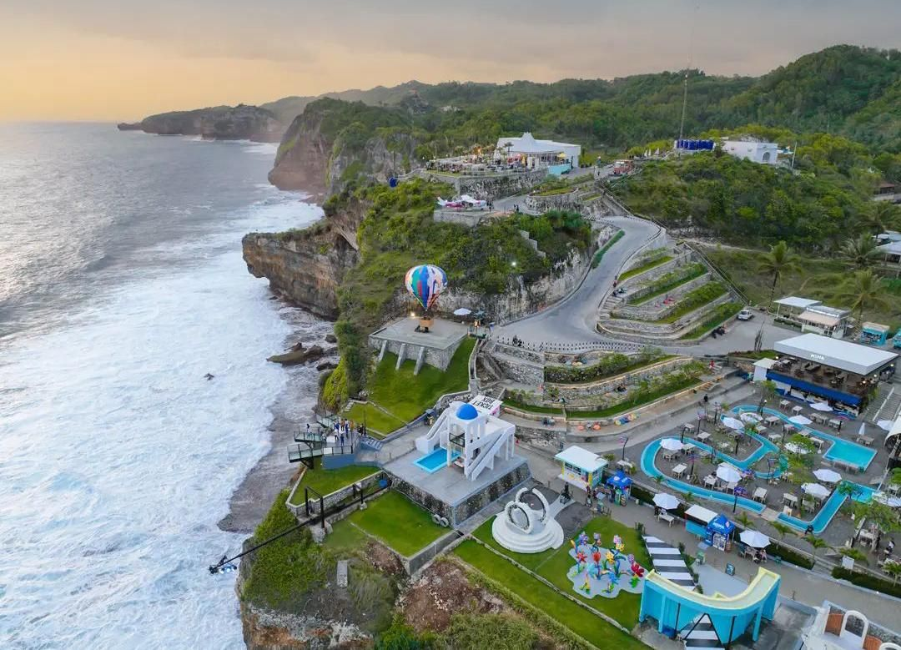

Tempat Wisata Indonesia
Tempat Wisata Bali

Mengunjungi Pura Tanah Lot yang terkenal dengan keindahan Sunset-nya. Mengunjungi taman bunga terbesar di Bali yaitu The Blooms Garden Bedugul.Mengunjungi pantai Pandawa yang menawarkan keindahan pantai pasir putih.
Harga Mulai dari Rp500.000,00 /pax
Fasilitas:
- Private Car
- Free Ride Speed Boat
Tempat Wisata Jogja

Paket wisata jogja murah 2026 dengan pilihan destinasi wisata lengkap dan terbaru dengan harga bersahabat. Pelayanan crew untuk paket tour jogja murah pasti ramah & berpengalaman. Melayani paket liburan jogja segala kebutuhan berwisata Anda di Yogyakarta untuk perorangan, keluarga & rombongan wisata hits di jogja.
Harga Mulai dari Rp400.000,00 /pax
Fasilitas:
- Private Car
- Private Tour Guide